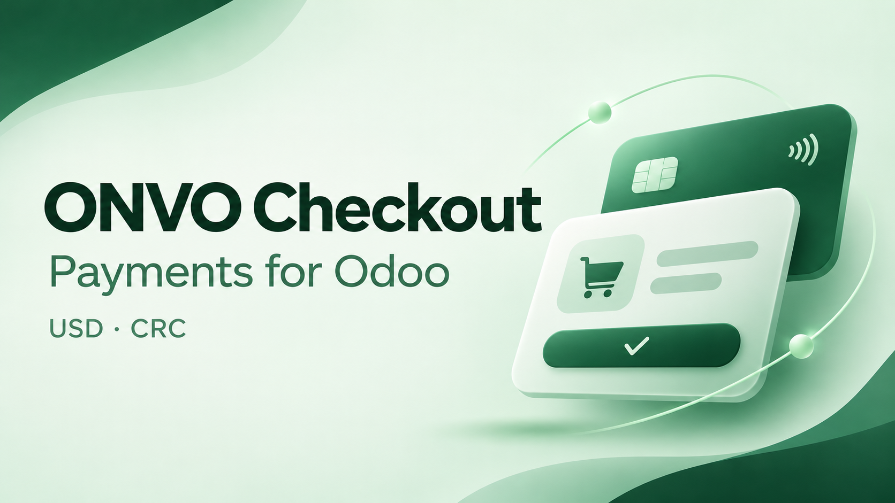

ONVOPay · Odoo 18
Free ONVOPay payment gateway for Odoo eCommerce in Costa Rica. Accept one-time payments in CRC and USD through ONVO hosted checkout.
Card payments and Apple Pay depend on your ONVO account eligibility and enabled methods. Apple Pay also requires a compatible device and Wallet.
Beta release · Test mode recommended
Buyers complete payment on ONVO. Card numbers and security codes do not pass through this connector.
One-time payments in Costa Rican colones and US dollars, using the payment methods available to your ONVO account.
Signed webhook validation and server-side checks of session identity, amount, currency and mode before marking a transaction paid.
Install ONVO Checkout in Odoo 18 Community or Enterprise on Odoo.sh or your own server. Open the ONVO payment provider from Accounting or Website configuration. The setup instructions are built into the provider form.
Get your test secret API key from the ONVO Dashboard and paste it in the masked Secret API key field. Hosted checkout needs no public or publishable key.
onvo_test_secret_key_...
Use the copy button in Odoo. In ONVO, open Developers → Webhooks → Add webhook in the same test mode, paste the URL and select this event:
checkout_session.succeeded
Copy the endpoint's whsec_... signing secret back into Odoo.
Confirm the data-transfer checkbox, select test mode and save. Use Test connection on the ONVO webhook. Then publish the provider, complete a test checkout and confirm that the Odoo transaction reaches Done.
Your Odoo site needs a public HTTPS domain on port 443. The webhook URL is generated for your provider; no route or code changes are needed. The API key and webhook must belong to the same ONVO account and use the same test or live mode.
The webhook signing secret is different from the API key. Use ONVO's signed webhook format. If needed, retrieve it with Reveal signing secret in the endpoint's detail page.
For live payments, replace both secrets with live-mode credentials and switch Odoo to live mode in the same save. Repeat ONVO's connection test. An optional ONVO-issued referral code can be added separately.
The provider's Apple Pay tab guides you through ONVO activation, testing and the move to live mode. Hosted checkout uses your existing credentials and webhook. No extra SDK or Odoo-domain registration is needed.
The setup tool is restricted to Settings administrators and sandbox payments. Apple Pay availability depends on ONVO account activation, merchant eligibility, mode and device. Odoo reports checkout completion; activation status remains in the ONVO Dashboard.
An ONVO merchant account and ONVO API access are required. ONVO processing fees and account eligibility apply separately. When the merchant enables the provider, the connector sends the amount, currency, transaction reference and buyer email, integration identifier and optional referral code to ONVO. Payment identifiers and status are stored in Odoo. There is no separate connector activation service or analytics collector.
One-time hosted payments, signed Checkout webhooks, return verification and scheduled reconciliation of pending payments. This release does not implement saved cards, recurring billing, refunds from Odoo, manual capture, payouts or POS. Existing payment_onvopaycard transactions and tokens are not migrated automatically. Odoo Online SaaS cannot install this Python add-on.
Conectá tu tienda Odoo con ONVOPay para cobrar en colones (CRC) y dólares (USD). El módulo es gratuito; las comisiones de procesamiento de ONVO se cobran por separado. Tus clientes pagan en el Checkout hospedado de ONVO.
Configurá la llave API secreta y el secreto de firma del webhook desde Odoo. Para Apple Pay, activá tu cuenta y habilitá tarjetas y Apple Pay en el modo correspondiente de ONVO. La disponibilidad también depende del dispositivo y de Wallet.
Separate builds are available for Odoo 17, 18, 19 and 20. Install the build matching your version on Odoo.sh or a self-hosted installation that permits Python add-ons. Odoo Online SaaS is not supported.
This connector redirects buyers to ONVO hosted checkout. ONVO handles its checkout domain registration. Embedded Apple Pay on your own domain is a different integration and is not included.
Yes. Use matching ONVO test credentials and a test-mode webhook. Live payments require replacing both secrets and switching the provider to live mode.